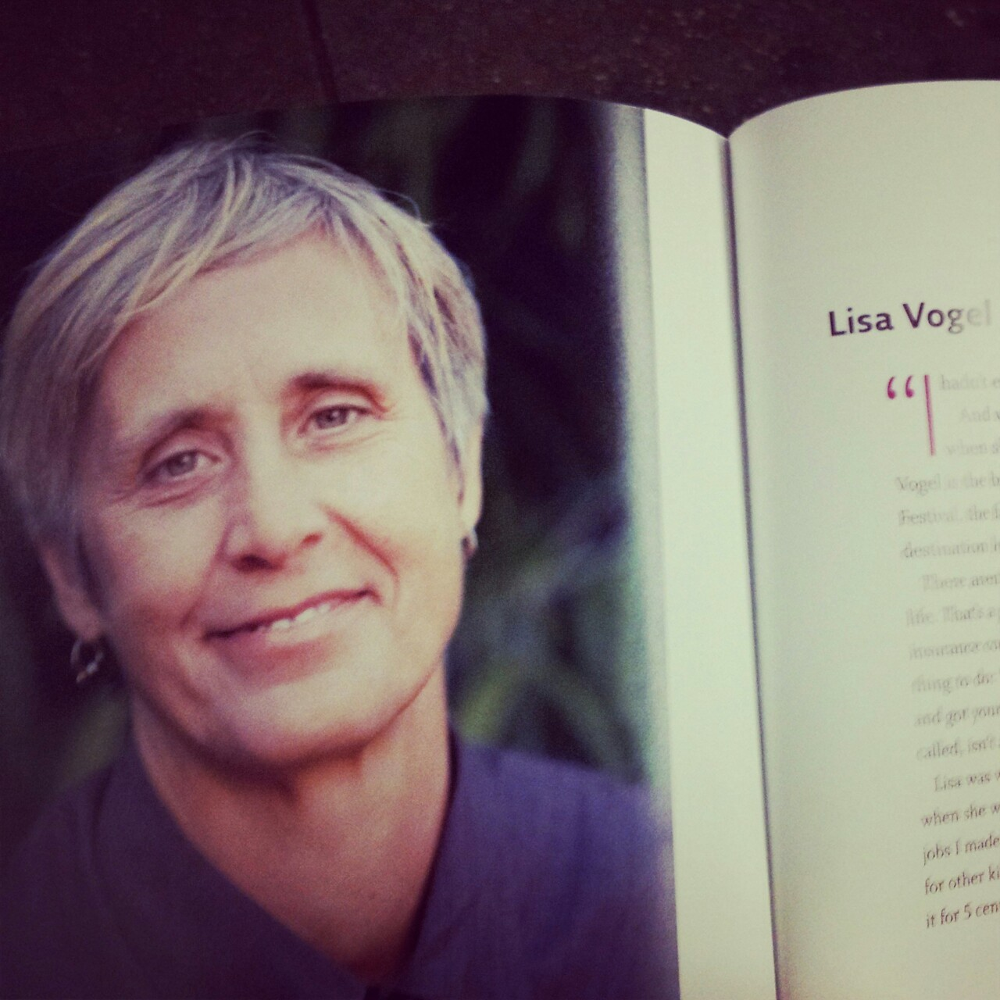

on the bench at the train station, the Hussy finds a volume of lesbian photo memoir
the Hussy has found three abandoned books on the train in her whole life and they have all been lesbian autobiography (the L coffee table book, stacyann chin, anna quindlan)
WHAT DOES IT MEAN #syncronicity